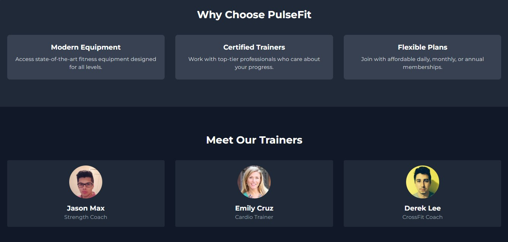

💪 PulseFit – Fitness Homepage Clone
PulseFit is a responsive, visually engaging homepage clone for a fitness platform. Built entirely using HTML and Tailwind CSS, it demonstrates modern web layout skills, scroll animations, and mobile responsiveness for landing pages.
🔧 What It Does
- Replicates a modern fitness brand's animated homepage layout.
- Includes hero section, call-to-action buttons, testimonials, and feature blocks.
- Uses scroll-based animations and transitions for an interactive UI.
- Fully responsive across desktops, tablets, and mobile devices.
🖼️ How It Looks – Screenshots
1️⃣ Homepage UI
Displays banner, about, and services section styled with Tailwind.


🧰 Tech Stack
- Frontend: HTML, Tailwind CSS
- Animations: AOS (Animate on Scroll)
- Deployment: Netlify / GitHub Pages
🯠Key Highlights
- Scroll-based animation effects using AOS
- Pixel-perfect section-based layout structure
- Optimized for responsiveness and performance
- Great for beginner front-end and landing page practice